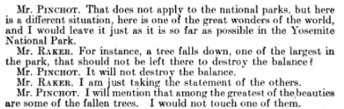

Move 4 — Speaking in Absolutes to Project Authority
Throughout the hearing, when committee members attempt to complicate or challenge Pinchot's positions, he repeatedly answers with short, declarative statements that leave no opening for negotiation. The pattern is most visible in his exchange with Mr. Raker over fallen trees in the park.

Analysis
Where other witnesses might hedge or qualify, Pinchot speaks in short, closed sentences that admit no ambiguity: "It will not destroy the balance." "I would not touch one of them." "No, sir." These are not arguments — they are verdicts. The brevity is part of the rhetorical work. Each clipped reply signals that the question has already been settled by someone with the authority to settle it. Pinchot is not engaging the committee as a deliberative body still working toward a decision. He is instructing them. The pattern reinforces the posture he established in Move 1: the debate is over, its outcome is clear, and those who still doubt it have simply not caught up. Speaking in absolutes is how he enforces that framing at the sentence level.